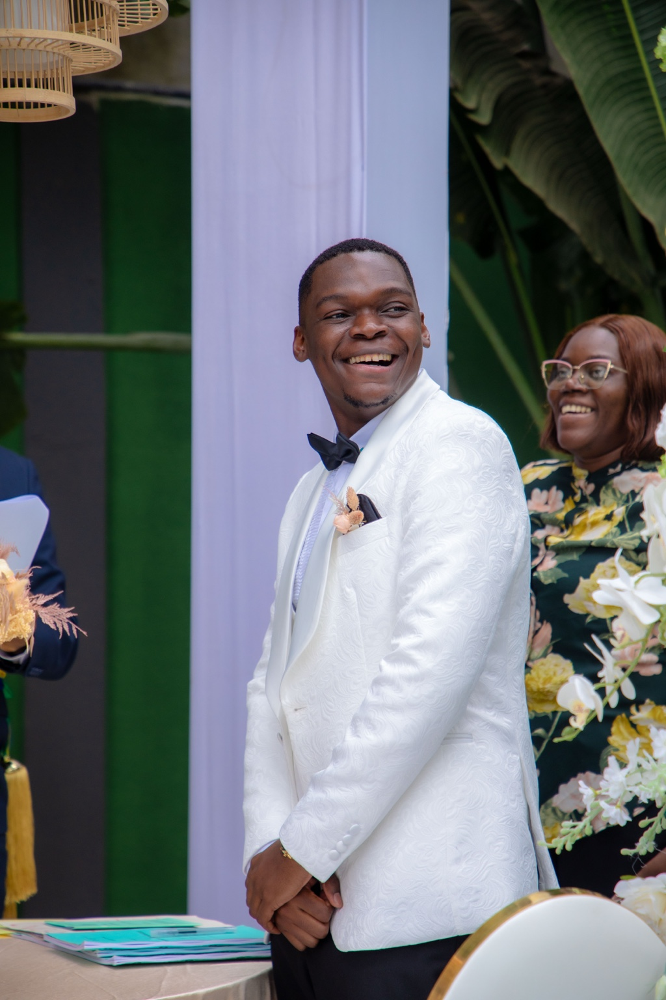

Photographie · Libreville, Gabon
L’émotion,
dans chaque image.
Je crée des images qui ne se contentent pas d’être belles. Des images qui racontent une personne, un lien et un moment.
La signature M.ESNO
Créer une image que l’on
a envie de ressentir.
La lumière, la direction, le moment et la retouche travaillent ensemble pour laisser la personne au centre de l’image.
Portfolio sélectionné
Des histoires
à regarder.
Une sélection de mariages et de portraits où l’émotion, les détails et les moments entre deux poses prennent leur place.
L’approche
Corriger sans effacer.
Diriger sans figer.
Je cherche aussi ce qui se passe entre deux poses : un regard, un geste, un sourire, une proximité.
Peaux naturelles, contrastes maîtrisés, couleurs organiques et retouche discrète : révéler, jamais effacer.
Les univers M.ESNO
Votre moment.
Votre histoire.
Réservation
On crée quelque chose
qui vous ressemble.
Présentez-moi votre projet. Nous définirons ensemble le lieu, l’ambiance et l’expérience qui correspondent à votre histoire.
Écrire sur WhatsApp ↗Numéro à remplacer avant publication.